Polylogarithm and related functions#
Polylogarithm, \(\mathrm{Li}_s(z)\)#
- ctx.polylog(x, s)#
where
ctxismath53,ctxflint.Returns the polylogarithm of real order \(s\), \(\displaystyle \mathrm{Li}_s(x) = \sum_{k=1}^{\infty} \frac{x^k}{k^s}, \quad s \ge -1, |x| \le 1 \,\), or its analytic continuation.
For \(s \le 1\) there is the additional argument restriction \(x \ne 1\) and \(s\) must be positive for \(x < -1\) or \(x > 256\).
Special cases are \(\mathrm{Li}_s(0) = 0\), \(\mathrm{Li}_s(1) = \zeta(s)\), \(\mathrm{Li}_s(-1) = -\eta(s)\). For \(x>1\) the real part of \(\mathrm{Li}_s(x)\) is returned.
See also Wikipedia [1438], MathWorld [1043], NIST [19], Ehrhardt [309] (3.6.12), Flint [841], Mpmath [692].
This function returns the polylogarithm function of real order \(s\)
\[\text{Li}_s(z)=\sum_{k=1}^\infty \frac{z^{k}}{k^s}, \quad s >0, |z|<1.\]\[\text{Li}_s(x) = \Phi(z, s, 1).\]for \(s\leq 1\) there is the additional arguments restriction \(z\neq 1\).
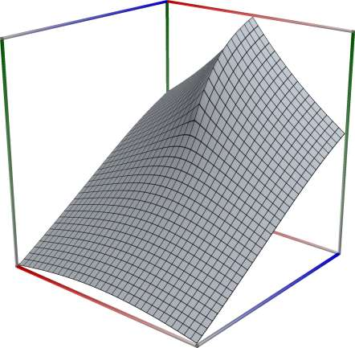 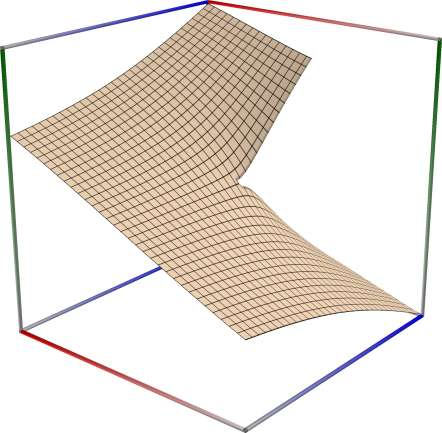 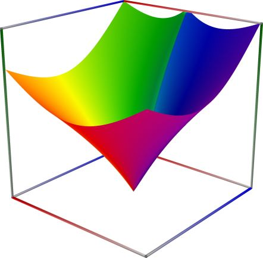
{kind=link}
{kind=link}
{kind=link}
Left figure: real part of the Polylogarithm, \(\mathrm{Li}_s(z)\). Camera angles are \(\theta=135^\circ\) and \(\phi = -12^\circ\), camera radius is -2.
Middle figure: imaginary part of the Polylogarithm, \(\mathrm{Li}_s(z)\). Camera angles are \(\theta=135^\circ\) and \(\phi = -12^\circ\), camera radius is -2.
Right figure: absolute value of the Polylogarithm, \(\mathrm{Li}_s(z)\), with color-coded phase. Camera angles are \(\theta=135^\circ\) and \(\phi = -12^\circ\), camera radius is -2.
An example in Python
>>> from xlcalcnet import xreal >>> xreal.PolylogR(2, 0.5) xreal('5.2359877559829887307E-1') >>> xreal.PolylogR(2, '0.1') xreal('5.3518479027559984754E-1')An example in Visual Basic
>>> from xlcalcnet import Gpr >>> Gpr.PolylogR(2, 0.5) Gpr('5.2359877559829887307E-1') >>> Gpr.PolylogR(2, '0.1') Gpr('5.3518479027559984754E-1')An example with real input:
>>> from xlcalcnet import dec, mpm, gmp, fpm, apm >>> mpm.dps = 40; s = '10'; x = '0.5' >>> \mathrm{d}x = dec.polylog(s, x); mx = mpm.polylog(s, x); gx = gmp.polylog(s, x) >>> fx = fpm.polylog(s, x); ax = apm.polylog(s, x) >>> mpm.show([\mathrm{d}x, mx, gx, fx, ax]) dec: 5.002463206060067750096752404960275553344E-1 mpm: 5.002463206060067750096752404960275553344e-1 gmp: 5.002463206060067750096752404960275553344E-01 fpm: 5.00246320606007E-01 apm: 5.002463206060067750096752404756715463182e-1 (4.658e-24%)An example with complex input:
>>> from xlcalcnet import dec, mpm, gmp, fpm, apm >>> mpm.dps = 20; s = '10'; z = '5.0 + 3j' >>> \mathrm{d}z = dec.polylog(s, z); mz = mpm.polylog(s, z); gz = gmp.polylog(m, z) >>> fz = fpm.polylog(m, z); az = apm.polylog(m, z) >>> mpm.show([\mathrm{d}z, mz, gz, fz, az], aligned=True) dec: 5.0140954368998825423E+0 + 3.0330881889981661901E+0j mpm: 5.0140954368998825423e+0 + 3.0330881889981661901e+0j gmp: 5.0140954368998825423E+00 + 3.0330881889981661901E+00j fpm: 5.01409543689988E+00 + 3.03308818899817E+00j apm: 5.0140954366116116588e+0 (1.145e-5%) + 3.0330881892210954918e+0 (2.687e-5%)j
Trilogarithm Function, \(\mathrm{Li}_3(z)\)#
- math53.trilog(x)#
Returns the trilogarithm \(\displaystyle \mathrm{trilog}(x) = \Re \displaystyle \mathrm{Li}_3(x)\). See also Wikipedia [1442], MathWorld [1028], NIST [17], Ehrhardt [309] (3.6.14), Mpmath [692].
An example in Python
>>> from xlcalcnet import xreal >>> xreal.Trilog(0.5) xreal('5.2359877559829887307E-1') >>> xreal.Trilog('0.1') xreal('5.3518479027559984754E-1')
An example in Visual Basic
>>> from xlcalcnet import Gpr >>> Gpr.Trilog(0.5) Gpr('5.2359877559829887307E-1') >>> Gpr.Trilog('0.1') Gpr('5.3518479027559984754E-1')
Dilogarithm Function, \(\mathrm{Li}_2(z)\)#
- ctx.dilog(x)#
where
ctxismath53,mathc53orctxflint.Returns the dilogarithm \(\displaystyle \mathrm{dilog}(x) = \Re \displaystyle \mathrm{Li}_2(x) = -\Re \int_0^x \frac{\log(1-t)}{t} \, \mathrm{d}t\).
See also Wikipedia [1442], MathWorld [1028], NIST [17], Ehrhardt [309] (3.6.13), Ehrhardt [309] (4.2.25), Flint [840], Mpmath [692].
This function returns the dilogarithm function
\[\text{dilog}(x) = \Re \text{Li}_2(x) = -\Re \int_0^x \frac{\log(1-t)}{t}\mathrm{d}t.\]Note that there is some confusion about the naming: some authors and/or computer algebra systems use \(\text{dilog}(x) = \text{Li}_2(1-x)\) and then call \(\text{Li}_2(x)\) Spence function/integral or similar.
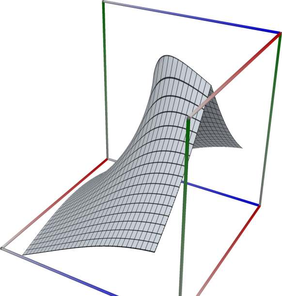 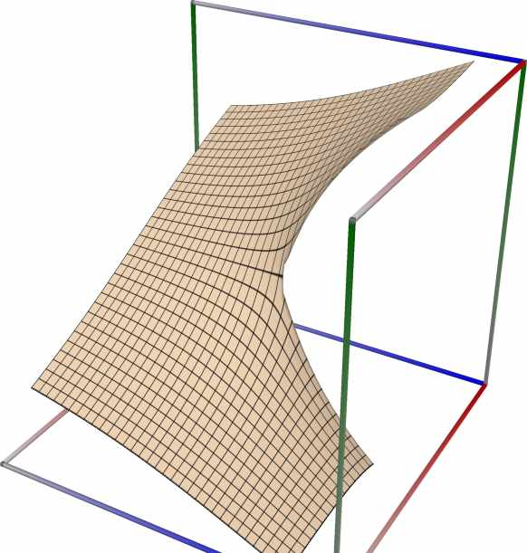 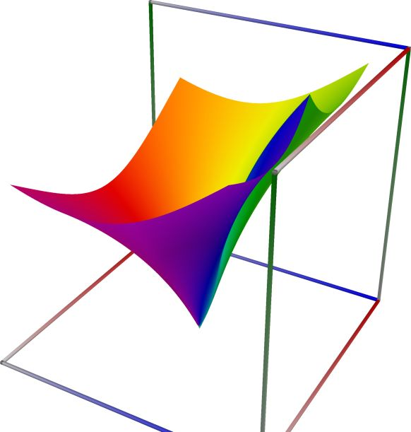
{kind=link}
{kind=link}
{kind=link}
Left figure: real part of the Dilog function, \(\mathrm{Li}_2(z)\). Camera angles are \(\theta=135^\circ\) and \(\phi = -12^\circ\), camera radius is -2.
Middle figure: imaginary part of the Dilog function, \(\mathrm{Li}_2(z)\). Camera angles are \(\theta=135^\circ\) and \(\phi = -12^\circ\), camera radius is -2.
Right figure: absolute value of the Dilog function, \(\mathrm{Li}_2(z)\), with color-coded phase. Camera angles are \(\theta=135^\circ\) and \(\phi = -12^\circ\), camera radius is -2.
An example in Python
>>> from xlcalcnet import xreal >>> xreal.Dilog(0.5) xreal('5.2359877559829887307E-1') >>> xreal.Dilog('0.1') xreal('5.3518479027559984754E-1')An example in Visual Basic
>>> from xlcalcnet import Gpr >>> Gpr.Dilog(0.5) Gpr('5.2359877559829887307E-1') >>> Gpr.Dilog('0.1') Gpr('5.3518479027559984754E-1')An example with real input:
>>> from xlcalcnet import dec, mpm, gmp, fpm, apm >>> mpm.dps = 40; x = '0.5' >>> \mathrm{d}x = dec.dilog(x); mx = mpm.dilog(x); gx = gmp.dilog(x) >>> fx = fpm.dilog(x); ax = apm.dilog(x) >>> mpm.show([\mathrm{d}x, mx, gx, fx, ax]) dec: 5.822405264650125059026563201596801087442E-1 mpm: 5.822405264650125059026563201596801087442e-1 gmp: 5.822405264650125059026563201596801087442E-01 fpm: 5.82240526465013E-01 apm: 5.822405264650125059026563201596801087442e-1 (9.858e-40%)An example with complex input:
>>> from xlcalcnet import dec, mpm, gmp, fpm, apm >>> mpm.dps = 20; z = '5.0 + 3j' >>> \mathrm{d}z = dec.dilog(z); mz = mpm.dilog(z); gz = gmp.dilog(z) >>> fz = fpm.dilog(z); az = apm.dilog(z) >>> mpm.show([\mathrm{d}z, mz, gz, fz, az], aligned=True) dec: 3.3260008208192192025E-2 + 4.6816673723804519905E+0j mpm: 3.3260008208192192025e-2 + 4.6816673723804519905e+0j gmp: 3.3260008208192192025E-02 + 4.6816673723804519905E+00j fpm: 3.32600082081922E-02 + 4.68166737238045E+00j apm: 3.3260008208192192025e-2 (7.958e-20%) + 4.6816673723804519905e+0 (7.237e-20%)j
Generalized Clausen sine function#
- ctxflint.clausen_sin(s, z)#
Returns the Clausen sine function. See also Wikipedia [1465], MathWorld [1095], Mpmath [737].
Computes the Clausen sine function, defined formally by the series
\[\mathrm{Cl}_s(z) = \sum_{k=1}^{\infty} \frac{\sin(kz)}{k^s}.\]The special case \(\mathrm{Cl}_2(z)\) (i.e.
clsin(2,z)) is the classical “Clausen function”. More generally, the Clausen function is defined for complex \(s\) and \(z\), even when the series does not converge. The Clausen function is related to the polylogarithm (polylog()) as\[ \begin{align}\begin{aligned}\mathrm{Cl}_s(z) = \frac{1}{2i}\left(\mathrm{Li}_s\left(e^{iz}\right) - \mathrm{Li}_s\left(e^{-iz}\right)\right)\\= \mathrm{Im}\left[\mathrm{Li}_s(e^{iz})\right] \quad (s, z \in \mathbb{R}),\end{aligned}\end{align} \]and this representation can be taken to provide the analytic continuation of the series. The complementary function clcos() gives the corresponding cosine sum.
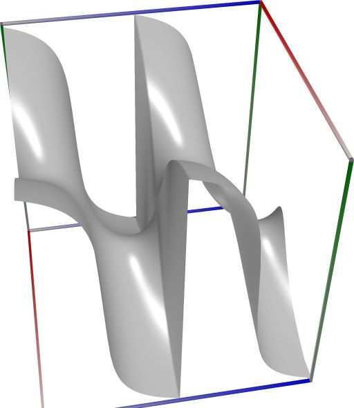 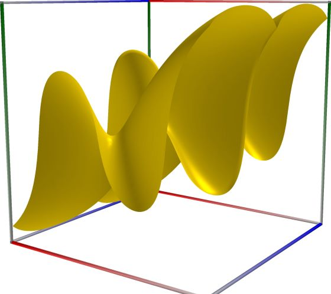 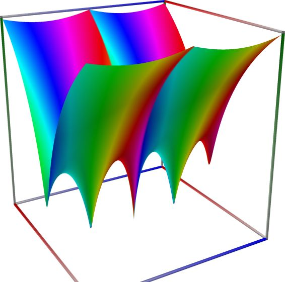
{kind=link}
{kind=link}
{kind=link}
Left figure: real part of the Generalized Clausen sine function. Camera angles are \(\theta=135^\circ\) and \(\phi = -12^\circ\), camera radius is -2.
Middle figure: imaginary part of the Generalized Clausen sine function. Camera angles are \(\theta=135^\circ\) and \(\phi = -12^\circ\), camera radius is -2.
Right figure: absolute value of the Generalized Clausen sine function, with color-coded phase. Camera angles are \(\theta=135^\circ\) and \(\phi = -12^\circ\), camera radius is -2.
An example with real input:
>>> from xlcalcnet import dec, mpm, gmp, fpm, apm >>> mpm.dps = 40; s = '3'; x = '4' >>> \mathrm{d}x = dec.clsin(s, x); mx = mpm.clsin(s, x); gx = gmp.clsin(s, x) >>> fx = fpm.clsin(s, x); ax = apm.clsin(s, x) >>> mpm.show([\mathrm{d}x, mx, gx, fx, ax]) dec: -6.533010136329338746275795332005774465795E-1 mpm: -6.533010136329338746275795332005774465795e-1 gmp: -6.533010136329338746275795332005774465795E-01 fpm: -6.53301013632934E-01 apm: -6.533010136329338746275795332005774886000e-1 (-2.242e-29%)An example with complex input:
>>> from xlcalcnet import dec, mpm, gmp, fpm, apm >>> mpm.dps = 20; s = '3'; z = '5.0 + 3j' >>> \mathrm{d}z = dec.clsin(s, z); mz = mpm.clsin(s, z); gz = gmp.clsin(s, z) >>> fz = fpm.clsin(s, z); az = apm.clsin(s, z) >>> mpm.show([\mathrm{d}z, mz, gz, fz, az], aligned=True) dec: -5.1750336134513741048E+0 - 2.1271427013787699791E+0j mpm: -5.1750336134513741048e+0 - 2.1271427013787699791e+0j gmp: -5.1750336134513741048E+00 - 2.1271427013787699791E+00j fpm: -5.17503361345137E+00 - 2.12714270137877E+00j apm: -5.1750336134513741059e+0 (-3.604e-14%) - 2.1271427013787699777e+0 (-7.287e-14%)j
Generalized Clausen cosine function#
- ctxflint.clausen_cos(s, z)#
Returns the Clausen cosine function. See also Wikipedia [1465], MathWorld [1095], Mpmath [736].
Computes the Clausen cosine function, defined formally by the series
\[\mathrm{\widetilde{Cl}}_s(z) = \sum_{k=1}^{\infty} \frac{\cos(kz)}{k^s}.\]This function is complementary to the Clausen sine function clsin(). In terms of the polylogarithm,
\[ \begin{align}\begin{aligned}\mathrm{\widetilde{Cl}}_s(z) = \frac{1}{2}\left(\mathrm{Li}_s\left(e^{iz}\right) + \mathrm{Li}_s\left(e^{-iz}\right)\right)\\= \mathrm{Re}\left[\mathrm{Li}_s(e^{iz})\right] \quad (s, z \in \mathbb{R}).\end{aligned}\end{align} \]
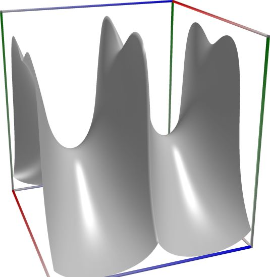 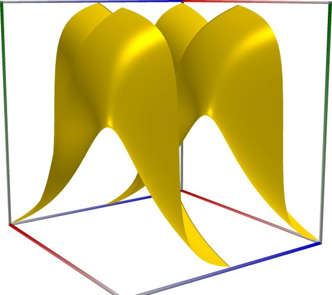 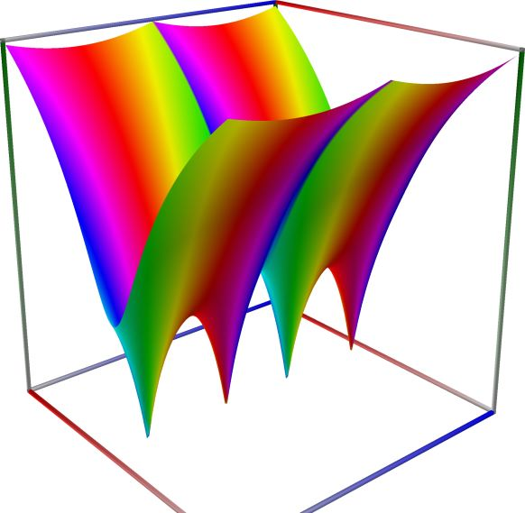
{kind=link}
{kind=link}
{kind=link}
Left figure: real part of the Generalized Clausen cosine function. Camera angles are \(\theta=135^\circ\) and \(\phi = -12^\circ\), camera radius is -2.
Middle figure: imaginary part of the Generalized Clausen cosine function. Camera angles are \(\theta=135^\circ\) and \(\phi = -12^\circ\), camera radius is -2.
Right figure: absolute value of the Generalized Clausen cosine function, with color-coded phase. Camera angles are \(\theta=135^\circ\) and \(\phi = -12^\circ\), camera radius is -2.
An example with real input:
>>> from xlcalcnet import dec, mpm, gmp, fpm, apm >>> mpm.dps = 40; s = '3'; x = '4' >>> \mathrm{d}x = dec.clcos(s, x); mx = mpm.clcos(s, x); gx = gmp.clcos(s, x) >>> fx = fpm.clcos(s, x); ax = apm.clcos(s, x) >>> mpm.show([\mathrm{d}x, mx, gx, fx, ax]) dec: -6.518926267198991308332758909517770104595E-1 mpm: -6.518926267198991308332758909517770104595e-1 gmp: -6.518926267198991308332758909517770104595E-01 fpm: -6.51892626719899E-01 apm: -6.518926267198991308332758909517763900500e-1 (-5.188e-29%)An example with complex input:
>>> from xlcalcnet import dec, mpm, gmp, fpm, apm >>> mpm.dps = 20; s = '3'; z = '5.0 + 3j' >>> \mathrm{d}z = dec.clcos(s, z); mz = mpm.clcos(s, z); gz = gmp.clcos(s, z) >>> fz = fpm.clcos(s, z); az = apm.clcos(s, z) >>> mpm.show([\mathrm{d}z, mz, gz, fz, az], aligned=True) dec: -2.1132834047743479436E+0 + 5.1271260828837504331E+0j mpm: -2.1132834047743479436e+0 + 5.1271260828837504331e+0j gmp: -2.1132834047743479436E+00 + 5.1271260828837504331E+00j fpm: -2.11328340477435E+00 + 5.12712608288375E+00j apm: -2.1132834047743479423e+0 (-7.335e-14%) + 5.1271260828837504341e+0 (3.638e-14%)j
Classical Clausen function, \(\mathrm{Cl}_2(x)\)#
- math53.clausen2(x)#
Returns the Clausen function \(\displaystyle \mathrm{Cl}_2(x) = \Im \displaystyle \mathrm{Li}_2(e^{ix}) = \int_0^x \log|2\sin(t/2)| \, \mathrm{d}t\).
See also: Wikipedia [1465], MathWorld [1095], Ehrhardt [309] (3.6.15), Mpmath [736].
An example in Python
>>> from xlcalcnet import xreal >>> xreal.Clausen2(0.5) xreal('5.2359877559829887307E-1') >>> xreal.Clausen2('0.1') xreal('5.3518479027559984754E-1')
An example in Visual Basic
>>> from xlcalcnet import Gpr >>> Gpr.Clausen2(0.5) Gpr('5.2359877559829887307E-1') >>> Gpr.Clausen2('0.1') Gpr('5.3518479027559984754E-1')
Bose-Einstein integrals, \(G_s(x)\)#
- math53.bose_einstein(s, x)#
Returns the Bose-Einstein integral of real order \(s\), \(\displaystyle G_s(x) = \frac{1}{\Gamma(s+1)} \int_0^{\infty} \frac{t^s}{e^{t-x}-1} = \text{Li}_{s+1}(e^x) \,\). If \(x>0\) the real part of \(G_s(x)\) is returned.
See also: MathWorld [1024], Ehrhardt [309] (3.6.7), NIST [16].
\[G_{s}(x)=\frac{1}{\Gamma\left(s+1\right)}\int_{0}^{\infty}\frac{t^{s}}{e^{t-x}-1}\mathrm{d}t,\]In terms of polylogarithms:
\[G_{s}(x)=\mathrm{Li}_{s+1}\left(e^{x}\right).\]An example in Python
>>> from xlcalcnet import xreal >>> xreal.BoseEinstein(2,5) xreal('5.2359877559829887307E-1') >>> xreal.BoseEinstein(2,'51') xreal('5.3518479027559984754E-1')
An example in Visual Basic
>>> from xlcalcnet import Gpr >>> Gpr.BoseEinstein(2,5) Gpr('5.2359877559829887307E-1') >>> Gpr.BoseEinstein(2,'51') Gpr('5.3518479027559984754E-1')
An example with real input:
>>> from xlcalcnet import dec, mpm, gmp, fpm, apm >>> mpm.dps = 40; s = '10'; x = '0.5' >>> \mathrm{d}x = dec.bose_einstein(s, x); mx = mpm.bose_einstein(s, x); gx = gmp.bose_einstein(s, x) >>> fx = fpm.bose_einstein(s, x); ax = apm.bose_einstein(s, x) >>> mpm.show([\mathrm{d}x, mx, gx, fx, ax]) dec: 1.650075952950667128565820621131669931198E+0 mpm: 1.650075952950667128565820621131669931198e+0 gmp: 1.650075952950667128565820621131669931198E+00 fpm: 1.65007595295067E+00 apm: 1.650075952950667128565820642266282738366e+0 (2.139e-21%)
An example with complex input:
>>> from xlcalcnet import dec, mpm, gmp, fpm, apm >>> mpm.dps = 20; s = '10'; z = '5.0 + 3j' >>> \mathrm{d}z = dec.bose_einstein(s, z); mz = mpm.bose_einstein(s, z); gz = gmp.bose_einstein(s, z) >>> fz = fpm.bose_einstein(s, z); az = apm.bose_einstein(s, z) >>> mpm.show([\mathrm{d}z, mz, gz, fz, az], aligned=True) dec: -1.4096051587148306166E+2 + 1.9476656215692471738E+1j mpm: -1.4096051587148306166e+2 + 1.9476656215692471738e+1j gmp: -1.4096051587148306166E+02 + 1.9476656215692471738E+01j fpm: -1.40960515871483E+02 + 1.94766562156925E+01j apm: -1.4096051581016388546e+2 (-7.08e-5%) + 1.9476656215507044363e+1 (0.0007137%)j
Fermi-Dirac integrals, \(F_s(x)\)#
- ctx.fermi_dirac(s, x)#
where
ctxismath53orctxflint.Returns the Fermi-Dirac integral of order \(s\), \(\displaystyle F_s(x) = \frac{1}{\Gamma(s+1)} \int_0^{\infty} \frac{t^s}{e^{t-x}+1} = -\text{Li}_{s+1}(-e^x) \,\).
See also: Wikipedia [1425], MathWorld [1030], Ehrhardt [309] (3.6.8.1).
\[F_{s}(x)=\frac{1}{\Gamma\left(s+1\right)}\int_{0}^{\infty}\frac{t^{s}}{e^{t-x}+1}\mathrm{d}t,\]\(F_{s}(x)=-\mathrm{Li}_{s+1}\left(-e^{x}\right),\)
An example in Python
>>> from xlcalcnet import xreal >>> xreal.FermiDiracR(2,5) xreal('5.2359877559829887307E-1') >>> xreal.FermiDiracR(2,'51') xreal('5.3518479027559984754E-1')
An example in Visual Basic
>>> from xlcalcnet import Gpr >>> Gpr.FermiDiracR(2,5) Gpr('5.2359877559829887307E-1') >>> Gpr.FermiDiracR(2,'51') Gpr('5.3518479027559984754E-1')
An example with real input:
>>> from xlcalcnet import dec, mpm, gmp, fpm, apm >>> mpm.dps = 40; s = '10'; x = '1.5' >>> \mathrm{d}x = dec.fermi_dirac(s, x); mx = mpm.fermi_dirac(s, x); gx = gmp.fermi_dirac(s, x) >>> fx = fpm.fermi_dirac(s, x); ax = apm.fermi_dirac(s, x) >>> mpm.show([\mathrm{d}x, mx, gx, fx, ax]) dec: 4.472317812068368662350774526763653861048E+0 mpm: 4.472317812068368662350774526763653861048e+0 gmp: 4.472317812068368662350774526763653861048E+00 fpm: 4.47231781206837E+00 apm: 4.472317812068368662350774520946064383782e+0 (1.711e-22%)
An example with complex input:
>>> from xlcalcnet import dec, mpm, gmp, fpm, apm >>> mpm.dps = 20; s = '10'; z = '5.0 + 3j' >>> \mathrm{d}z = dec.fermi_dirac(s, z); mz = mpm.fermi_dirac(s, z); gz = gmp.fermi_dirac(s, z) >>> fz = fpm.fermi_dirac(s, z); az = apm.fermi_dirac(s, z) >>> mpm.show([\mathrm{d}z, mz, gz, fz, az], aligned=True) dec: -1.5096075557263597965E+2 + 3.0204317063642472857E+1j mpm: -1.5096075557263597965e+2 + 3.0204317063642472857e+1j gmp: -1.5096075557263597965E+02 + 3.0204317063642472857E+01j fpm: -1.50960755572636E+02 + 3.02043170636425E+01j apm: -1.5096075564796857312e+2 (-7.353e-5%) + 3.0204317086095309026e+1 (0.0004834%)j
Legendre’s Chi function, \(\chi_s(x)\)#
- math53.legendre_chi(s, x)#
Returns Legendre’s Chi function, defined as \(\displaystyle \chi_s(x) = \sum_{n=0}^{\infty} \frac{x^{2n+1}}{(2n+1)^s} = \tfrac{1}{2} \left( \text{Li}_s(x) - \text{Li}_s(-x) \right) \,\), for \(s\ge 0, |x|\le 1\).
See also: Wikipedia [1434], MathWorld [1041], Ehrhardt [309] (3.6.9).
The function can be expressed as
\[\chi_s(x)=2^{-s} x \Phi\left(x^2,s,\tfrac{1}{2}\right) = \tfrac{1}{2}\left(\text{Li}_s(x)-\text{Li}_s(-x) \right).\]For large \(s > 22.8\) the function adds up to three terms of the sum, for \(s = 0\) or \(s = 1\) the \(Li_s\) relation is used, otherwise the result is computed with Lerch’s transcendent.
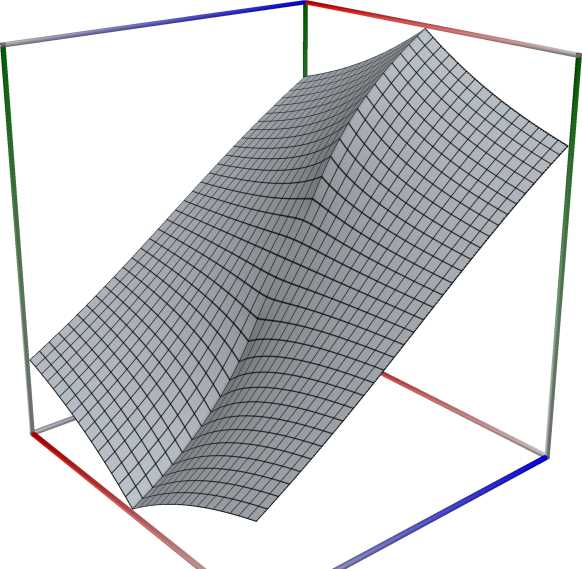 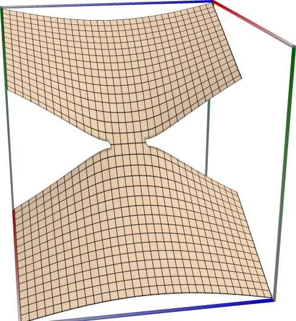 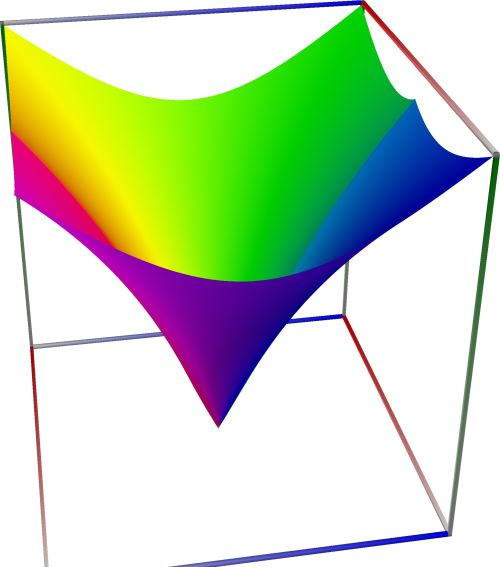
{kind=link}
{kind=link}
{kind=link}
Left figure: real part of Legendre’s Chi function, \(\chi_s(x)\). Camera angles are \(\theta=135^\circ\) and \(\phi = -12^\circ\), camera radius is -2.
Middle figure: imaginary part of Legendre’s Chi function, \(\chi_s(x)\). Camera angles are \(\theta=135^\circ\) and \(\phi = -12^\circ\), camera radius is -2.
Right figure: absolute value of Legendre’s Chi function, \(\chi_s(x)\), with color-coded phase. Camera angles are \(\theta=135^\circ\) and \(\phi = -12^\circ\), camera radius is -2.
An example in Python
>>> from xlcalcnet import xreal >>> xreal.LegendreChi(2,5, 0.5) xreal('5.2359877559829887307E-1') >>> xreal.LegendreChi('5.1', 0.5) xreal('5.3518479027559984754E-1')An example in Visual Basic
>>> from xlcalcnet import Gpr >>> Gpr.LegendreChi(2,5, 0.5) Gpr('5.2359877559829887307E-1') >>> Gpr.LegendreChi('5.1', 0.5) Gpr('5.3518479027559984754E-1')An example with real input:
>>> from xlcalcnet import dec, mpm, gmp, fpm, apm >>> mpm.dps = 40; s = '10'; x = '1.5' >>> \mathrm{d}x = dec.legendre_chi(s, x); mx = mpm.legendre_chi(s, x); gx = gmp.legendre_chi(s, x) >>> fx = fpm.legendre_chi(s, x); ax = apm.legendre_chi(s, x) >>> mpm.show([\mathrm{d}x, mx, gx, fx, ax]) dec: 1.500058011828613644574663245595439676243E+0 mpm: 1.500058011828613644574663245595439676243e+0 gmp: 1.500058011828613644574663245595439676243E+00 fpm: 1.50005801182861E+00 apm: 1.500058011828613644574663246586459327124e+0 (2.88e-22%)An example with complex input:
>>> from xlcalcnet import dec, mpm, gmp, fpm, apm >>> mpm.dps = 20; s = '10'; z = '5.0 + 3j' >>> \mathrm{d}z = dec.legendre_chi(s, z); mz = mpm.legendre_chi(s, z); gz = gmp.legendre_chi(s, z) >>> fz = fpm.legendre_chi(s, z); az = apm.legendre_chi(s, z) >>> mpm.show([\mathrm{d}z, mz, gz, fz, az], aligned=True) dec: 4.9993028299912224901E+0 + 3.0032350570493713371E+0j mpm: 4.9993028299912224901e+0 + 3.0032350570493713371e+0j gmp: 4.9993028299912224901E+00 + 3.0032350570493713371E+00j fpm: 4.99930282999122E+00 + 3.00323505704937E+00j apm: 4.9993028304470985305e+0 (2.364e-5%) + 3.0032350577905899996e+0 (4.62e-5%)j
Generalized inverse tangent integral#
- ctxflint.inverse_tan_integral(s, z)#
Returns the generalized inverse tangent integral \(Ti_s(z)\).
See also: Wikipedia [1439], MathWorld [1037].
This function returns the inverse-tangent integral
\[\text{Ti}_2(x) = \int_0^x \frac{\arctan(t)}{t} \mathrm{d}t.\]For \(x>1\) the relation
\[\text{Ti}_2(x) = \text{Ti}_2\left(\frac{1}{x}\right) + \frac{\pi}{2} \log(x)\]is used, and for \(x<0\) the result is \(\text{Ti}_2(x) = -\text{Ti}_2(-x)\).
See also MathWorld
The inverse tangent integral Tis(z) (Lewin 1958, Ch. VII § 1.2) can be expressed in terms of polylogarithms:
\[\mathrm {Ti} _{s}(z)={1 \over 2i}\left[\mathrm {Li} _{s}(iz)-\mathrm {Li} _{s}(-iz)\right].\]The relation in particular implies:
\[\mathrm {Ti} _{0}(z)={z \over 1+z^{2}},\quad \mathrm {Ti} _{1}(z)=\arctan z,\quad \mathrm {Ti} _{2}(z)=\int _{0}^{z}{\arctan t \over t}\mathrm{d}t,\quad \ldots ~\quad \mathrm {Ti} _{n+1}(z)=\int _{0}^{z}{\frac {\mathrm {Ti} _{n}(t)}{t}}\mathrm{d}t,\]which explains the function name.
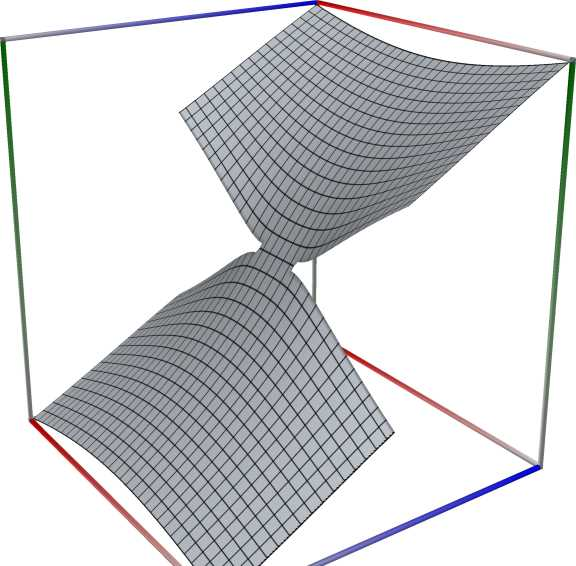 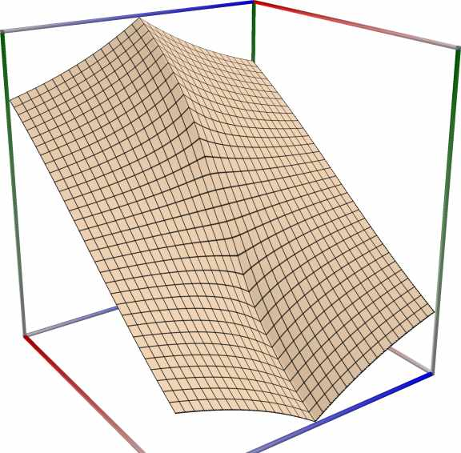 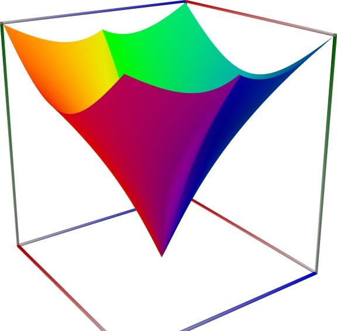
{kind=link}
{kind=link}
{kind=link}
Left figure: real part of the Generalized inverse tangent integral. Camera angles are \(\theta=135^\circ\) and \(\phi = -12^\circ\), camera radius is -2.
Middle figure: imaginary part of the Generalized inverse tangent integral. Camera angles are \(\theta=135^\circ\) and \(\phi = -12^\circ\), camera radius is -2.
Right figure: absolute value of the Generalized inverse tangent integral, with color-coded phase. Camera angles are \(\theta=135^\circ\) and \(\phi = -12^\circ\), camera radius is -2.
An example with real input:
>>> from xlcalcnet import dec, mpm, gmp, fpm, apm >>> mpm.dps = 40; s = '10'; x = '1.5' >>> \mathrm{d}x = dec.ti(s, x); mx = mpm.ti(s, x); gx = gmp.ti(s, x) >>> fx = fpm.ti(s, x); ax = apm.ti(s, x) >>> mpm.show([\mathrm{d}x, mx, gx, fx, ax]) dec: 1.499943569822004012305079650116043572538E+0 mpm: 1.499943569822004012305079650116043572538e+0 gmp: 1.499943569822004012305079650116043572538E+00 fpm: 1.49994356982200E+00 apm: 1.499943569822004012305079649905189176482e+0 (9.317e-24%)An example with complex input:
>>> from xlcalcnet import dec, mpm, gmp, fpm, apm >>> mpm.dps = 20; s = '10'; z = '5.0 + 3j' >>> \mathrm{d}z = dec.ti(s, z); mz = mpm.ti(s, z); gz = gmp.ti(s, z) >>> fz = fpm.ti(s, z); az = apm.ti(s, z) >>> mpm.show([\mathrm{d}z, mz, gz, fz, az], aligned=True) dec: 4.9998641623415218366E+0 + 2.9969552556663645569E+0j mpm: 4.9998641623415218366e+0 + 2.9969552556663645569e+0j gmp: 4.9998641623415218366E+00 + 2.9969552556663645569E+00j fpm: 4.99986416234152E+00 + 2.99695525566636E+00j apm: 4.9998641636149685969e+0 (3.517e-5%) + 2.9969552549261524848e+0 (4.218e-5%)j
- math53.tangent_int(s, x)#
Returns the inverse tangent integral of real order \(s\), \(\displaystyle \mathrm{Ti}_s(x) = \sum_{k=0}^{\infty} \frac{(-1)^k x^{2k+1}}{(2k+1)^s}, \quad |x|<1\).
See also: Wikipedia [1439], MathWorld [1037], Ehrhardt [309] (3.6.17).
An example in Python
>>> from xlcalcnet import xreal >>> xreal.TangentInt2(2,0.5) xreal('5.2359877559829887307E-1') >>> xreal.TangentInt2(2,'0.1') xreal('5.3518479027559984754E-1')
An example in Visual Basic
>>> from xlcalcnet import Gpr >>> Gpr.TangentInt2(2,0.5) Gpr('5.2359877559829887307E-1') >>> Gpr.TangentInt2(2,'0.1') Gpr('5.3518479027559984754E-1')